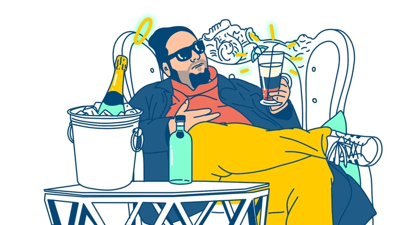
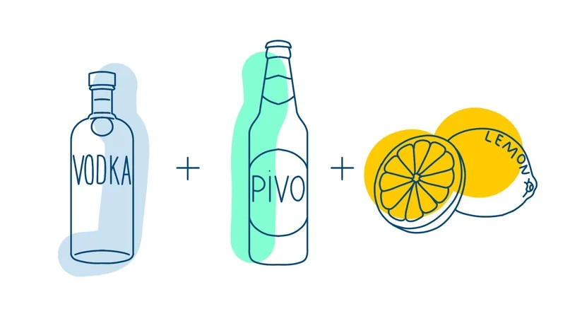
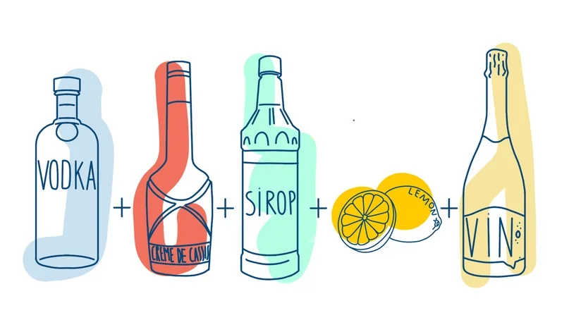
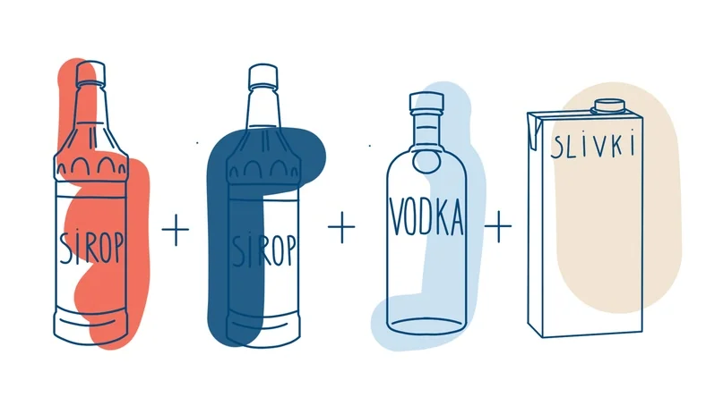
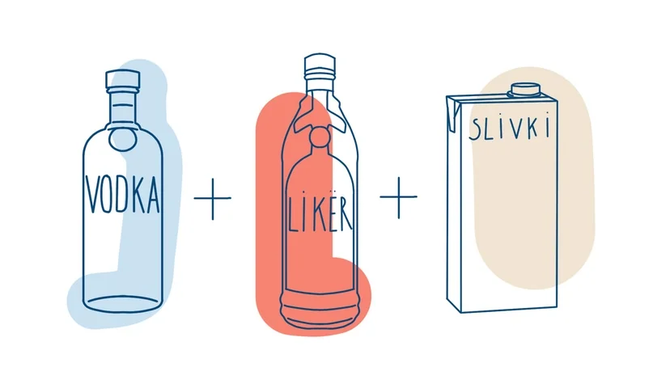
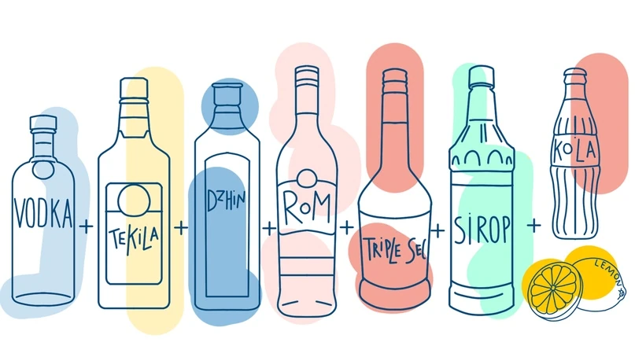

Алкоголь — спасение от жары и от плохих новостей. Так утверждает Данила Блюз в своем новом гайде по борьбе с информационным похмельем.
Страна горит в пламени армагеддона — это единственное объяснение для той сучьей жары, что свалилась на мой город. В подтверждение тому последние новости, которые невозможно читать без слез. Хаос, разброд, коррупция, несправедливость. Как спокойно перенести все это? Как сохранить рассудок и нервы, читая новости и покрываясь хрустящей корочкой от адского пламени? Лучший способ остыть во всех смыслах — старые добрые алкогольные коктейли.
Сейчас дядя Данила расскажет вам, какую выпивку с какими новостями нужно сочетать, чтобы с улыбкой Будды встретить последние для человечества времена.

Выборы в Мосгордуму
Ужасная несправедливость, конечно. Независимых кандидатов Илью Яшина и Любу Соболь власти не допускают до выборов, докопались до каких-то там подписей, нашли какие-то мертвые души в списках. Очевидно же всем, что все эти эксперты подставные, а их выводы гроша ломаного не стоят! Просто это дряхлая власть отчаянно цепляется склеротичными своими пальцами за Москву, боится пустить к рулю молодых, современных и честных.
Вот уже полицейские за руки и за ноги тащат худенькую, как стрекоза, Любу Соболь в страшный автозак, а бедного Илью Яшина, этого отчаянного революционера с лицом младенца, бьют по голове дубинкой! Сердца всех порядочных людей обливаются кровью от беспредела, творящегося в Москве. Спокойно, господа, чтобы выветрить из памяти Любу Соболь, Яшина и остальных обиженных кандидатов предлагаю вам выпить отличный коктейль под названием «Московский мул». В нем есть водка и пиво — все что нужно, чтобы унять совесть и снизить температуру.
Насыпаем в железную кружку доверху лед, выливаем туда 50 грамм водки (можно больше, в зависимости от того, насколько сильно вы хотите унять свою совесть), выдавливаем пару долек лайма и доливаем все остальное имбирным пивом или имбирным элем. Перемешиваем ложкой, украшаем лаймом и пьем через соломинку. После пары кружек «мула» вам уже будет наплевать на то, кто там у вас мэр и кого только что били дубинкой по голове.

Антироссийские волнения в Грузии
Опять мы, русские люди, обидели какую-то маленькую, но очень гордую соседскую нацию. Ей-богу, не страна, а слон в посудной лавке! Гляньте на карту: очень похоже. Огромная Россия, а вокруг — всякая хрупкая мелочь, которая трясется и падает с полки от любого малейшего движения нашей державы. На этот раз мы непонятно чем не угодили нашим любимым братьям-грузинам. Теперь они плюют нам в харчо, ссут нам в цинандали, подают шашлыки из собачатины, да еще и требуют за этот сервис дополнительные 20%. Таков ответ воинственных горцев «оккупантам».
Не видать нам теперь красот Грузии как своих ушей. Чтобы перенести очередную истерику наших соседей, некоторые предпочитают в знак дружбы между народами пить грузинское вино, но я советую вылить его в унитаз и, как подобает имперцу, соорудить что-нибудь эдакое. Сделаем мы, конечно, коктейль на основе вина, чтобы показать этим носатым хамам, что кроме их хваленого киндзмараули есть на свете кое-что интересное.
Вот, к примеру, Господь дал людям прекрасный коктейль под названием «Русский весенний пунш». Чувствуете, да, как запахло русской весной? А от слова «пунш» веет гусарством и пьяными дебошами в захваченном Париже. То ли еще будет! Итак, в шейкер наливаем водки грамм 50, полстопки черносмородинового ликера Creme de Cassis и 10 миллилитров сахарного сиропа, выдавливаем туда же пару долек лимона. Встряхиваем все это дело, выливаем в наполненный льдом хайбол и доливаем сверху игристое вино. Вуаля!
Теперь нам не нужна никакая Грузия, пусть старый черт Кикабидзе там лопнет от злости! Кстати, этот коктейль входит в список официальных коктейлей международной ассоциации барменов, а значит, вы можете заказать его в любой точке мира, в любом баре. А знают ли в любой точке мира ваше мукузани? Да за такие слова вам бармен по морде полотенцем даст и прогонит к черту!

Закон об оскорблении власти
Этого уж душа свободного неполживого россиянина снести никак не может! В Думе приняли закон, запрещающий «явное неуважение к обществу, государству, официальным государственным символам РФ, Конституции РФ или органам, осуществляющим государственную власть в РФ». Но честный интеллигентный человек не может не оскорблять! Это что же, теперь нельзя говорить «рашка-парашка» и сжигать российский триколор? Помилуйте, а чем же тогда заниматься простому либералу? Ведь сколько журналистских карьер построено и держится только на том, что они называют русский народ «рабами» и «быдлом», а нашу страну — «помойкой» и «концлагерем»! Это просто изуверство какое-то, сам царь Ирод не выдумал бы закона страшнее!
Чтобы унять нервы, думаю, подойдет коктейль под названием «Российский флаг». Многие рекомендуют для поднятия патриотизма в организме пить водку, но лично для меня водка — это каждодневная рутина, нужно вывести потребление шотов на новый уровень. Итак, для российского флага нам понадобится гренадин, сироп «Блю Кюрасао» и водка. Коктейль слоистый, потому наливаем все ингредиенты аккуратно, по ложечке, чтобы они не смешались. Сперва гренадин, затем — «Блю Кюрасао» и в финале — водку. Для пущей схожести с флагом в верхний слой водки можно капнуть сливок, чтобы получился белый, а не прозрачный слой. Ну и, конечно, главное не перепутать очередность, не то выпьете вместо российского триколора флаг Сербии или, чего похуже, — Нидерландов.
После пары таких шотов прилив патриотизма гарантирован: вы с удивлением обнаружите, что наизусть помните текст гимна и у вас напрочь отобьет всякое желание как-либо оскорблять наши государственные символы.

Миграционный кризис
На наших глазах Европа переживает свой закат: орды беженцев из разоренных колоний бегут населять Евросоюз в поисках халявных пособий и свежей белой пиздятины. В зареве от горящего собора Парижской Богоматери француженки убегают от похотливых алжирцев, боевики ИГИЛ (запрещенного в России, если забыли) устраивают резню в вагонах метро и колесят по пляжам Ниццы на мусоровозах, давя загорающих. Сил нет глядеть, как погибает старушка-Европа под гнетом нового нашествия варваров. Предлагаю выпить еще одну порцию гордости за то, что ты русский и белый — коктейль, который так и называется: «Белый русский».
В стакан олд фэшн бросаем несколько кубиков льда, наливаем водки, сверху — кофейный ликер и сливки. Смешиваем все это короткой соломинкой и пьем через нее же. А можно и просто так пить. Вот и все. Сами не заметите, как вам станет наплевать на Европу и ее дебильные соборы, гори они синим пламенем!

Полицейский произвол
Оборотни в погонах в последнее время совсем обнаглели. Они уже даже не оборотни: они не стесняются своей волчьей сущности и вершат грязные дела открыто и небрежно, уверенные в собственной безнаказанности! Внаглую фабрикуют дела, подбрасывают наркотики, тоннами воруют деньги, лупят обывателей на митингах — веселятся как могут!
Чтобы без страха выходить на улицу и уверенно смотреть копам в глаза, непременно надо что-нибудь выпить. Да не абы что, а что-нибудь оооочень крепкое, настолько же крепкое, насколько страшная у нас полиция. Думаю, здесь подойдет король всех коктейлей — «Лонг-Айлендский холодный чай». Коктейль придуман во времена сухого закона, а значит, в нем уже заложена некая криминальная нотка. Берем стакан хайбол, льем в него водку, текилу, джин, белый ром, ликер «Трипл Сек», выдавливаем немного лимонного сока, добавляем сахарный сироп и колу. Теперь вам не страшна ни жара, ни полицейская облава. Коктейль надолго обеспечит вас прохладой и хорошим настроением даже во время пыток.
